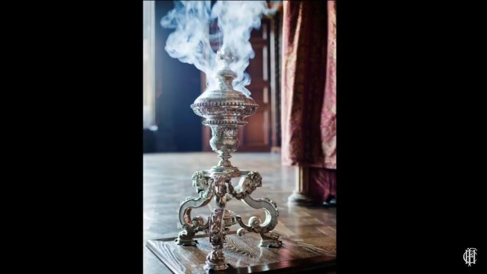

PS70: Intro to Digital Fabrication
<p> Week 1. Introduction and documentation </p>
<p> An overview of the weekly assignments and projects as viewable on the next webpages:
Originally, I came up with 4 other ideas to work on besides the POV, which are as follows: </p>
<p>
Goethe - "Life is short, art is long!"
</p>
<p> Dhruv - "Options, Futures, which one to bet against?" </p>
<h4> Executive Summary </h4>
<ul>
<p><li>ChipToof- This idea was inspired by a Tufts research article that used a combination of silk and gold to track the quality of the food but not the body's reaction to it. I eversince wondered what this device would be like if a more durable and robust tooth chip could give continuous data on diet and engaged Dan and a nutritionalist from the Hi Labs to finesse this product. After much research, I had to abandon this project because it was more biochemistry up but I learned a lot about silicone minituarization, non-invasive biotracking and nutrition and generally biochemistry down as expected from a Physics course. The device could perform multiple functions- measuring pH levels, tracking intake, quality and response of foods, drinks, smokes or aromas. Dan envisioned mounting a 3print the device like a walkman and put the sensor chip in there to make it durable.
<a href='./ThingRing (1).pdf' download > Download my pitchdeck!</a>
<li> Thing Ring- An iot ring that would connect to all devices and eventually a laser based headset.</li>
<li> Matchagrade- A Keurig for matcha.</li>
<li> Rolles Perfume Burner- Inspired by the 1960 3 foot solid silver perfume burner designed by Phillip Rolles for the Chatsworth Estate. </li>
<li> LUI (Laser User Interface)- Designing an AR heatset that used a system of lasers to form images, as opposed to GUI interfaces.</li> </p>
</p>
<p>Ultimately, I found it a more suitable subject to focus on building a Laser Persistence of Vision, while aligned more with the themes of the class.
</p>
</li>
<li> Week 2.
<source src="neopixelledcase.mp4" type= "video/mp4">
<ul>
<li>2D Design & Cutting: Printing Enya App's Logo </li>
<li>Designing a minimalist laser cut fit construction piece </li>
<li>Conceptualized the spinfork, Failing to capture a 3d scan </li>
</ul>
</p>
<p>
Week 3. 2D Design & Cutting: Designing an Acrylc signboard with LED lighting
<video controls>
<source src="week3.mp4" type= "video/mp4">">
If this acryclic signboard was an inverted iceberg:
<ul>
<li> A. The top piece is the biggest feature which includes an engraved mirror and acrylicswooden base to fit the LED; </li>
<li> A. The wooden base to fit the LED is pale in comparasion of length; </li>
<li> B. The middle piece is a calm LED light carefully placed between the bottom of the engraved acrylic and mirror to create a glowing effect in the engraving "PS"</li>
</ul>
<p>
<a href = "WhatsApp Video 2022-12-21 at 09.04.31 (2).mp4">
Week 4: Hand tools and fabrication: Handsawing wood, Engraving on Acryclic</a>
<li>
<video controls>
<source src="neopixelledcase.mp4" type= "video/mp4">
Week 5. A. 3D Design & Printing a Prussian Blue Neopixel Strip Case.
<p>
B. Four Rapid Prototypes:
<ul>
<li> A round edged body for Neopixel Persistence of Vision </li>
<li> Artillery Chamber - legals and optics of weapons manufacturing </li>
<li> The world's smallest Baroque Bathtub? I tweaked a Sèver Cuvette </li>
<li> SpinFork - why flick your wrist when you can press a button? it's that simple (theoretically) </li>
<li> </li>
</p>
<video controls>
<source src="./bmpsensor.mp4" type= "video/mp4">
Week 6. Electronic Input Devices: A. Programming a BMP Sensor (Heat, Temperature and Airpressure) and B. Following a Touch Sensor instruction. C. Building an accelerometer test.
<li>
<video controls>
<source src="soilcapacitorinaction.mp4" type= "video/mp4">
Week 7. Electronic Output Devices: A. <u>Emitting Neopixel LEDs with Arduino </u>. Considering LEDs were the heart of my final project, eventually I ended up playing with over using fourteen Arduino Libraries, which cater to programmers for Light Emitting Diodes (Async, Neopixel, Fast LED, Neopixel Light Painter, Adafruit Zero DMA library, Adafruit GFX, Adafruit Dostar, POV library, Async Sonar, Fast LED Neopixels, NeoPatterns, Fast IMUs, Adafruit NeoPXL8 and Adafruit Polulu.
B. Arraying Soil Moisture readings on OLED display, Blinking LEDs based on Soil Moisture readings,
<li><a href="week3.mp4">Four Demonstrations</a></li>
<li> <a href="soilcapacitorwoodencasingoled.jpeg">SoilCapacitor, Wood, Clay, 16 RBG LEDs and OLED</a></li>
<li> <a href="soilmoisturesensorwithledsandoled.mp4"> Video Demonstration of SoilCapacitor</a>
Video of a 3d printed LED lights case
<video controls>
<source src="neopixelledcase.mp4" type= "video/mp4"></li>
<li> <a href="../soilcapacitorwoodencasingoled.jpeg"> 3D Printed Case for LEDs </a></li> </ul>
<b> </b>
</li>
<li>
<video controls>
<source src="neopixelledcase.mp4" type= "video/mp4">
Week 8. CNC Milling, Molding & Casting: <u>Recycling Wax Molds</u> with <i> Nathan and Chase </i>
<li>
<video controls>
<source src="neopixelledcase.mp4" type= "video/mp4">
Week 9. Radio, WiFi, Bluetooth: Creating the <u> Blind Owl Interface</u>- Spinning owl head with a camera <i> (Chase and Joseph) </i>
</li>
<li>
<video controls>
<source src="neopixelledcase.mp4" type= "video/mp4">
Week 10. Machine Building and End Effectors:
</li>
<li>
<video controls>
<source src="neopixelledcase.mp4" type= "video/mp4">
Week 11. Computer Programming: 1. Setting up a Firebase, 2. Desiging Unity Characters
</li>
<li>
<video controls>
<source src="neopixelledcase.mp4" type= "video/mp4">
Week 12. Final Project: Neopixel Laser Persistence of Vision
</video>li>
</ul>
</p>
[1: Introduction & Documentation](./week1.html)
Video of a 3d printed LED lights case
<video controls>
<source src="lasercutpiecesculpture.mp4" type= "video/mp4">
<video controls>
<source src="lipobattery.mp4" type= "video/mp4">
</div>
<div>
Why?
I wanted to learn how to make LED acrylic sign boards and this was an impromptu version that I created whilst I took time off from my final project fixtures.
</div>
<div>
What I am using?
Handsaw for cutting wood
Handsaw for cutting acrylic
Drill with engraving forefront to mark the "PS"
Printer for getting the rainbow design
LED lights to glorify the design
</div>
<h3> Gallery of projects</h3>>
<a href="./soilcapacitorwoodencasingoled.jpeg"> Soil Capacitor with OLED display</a>
<a href="./week3m.jpeg"> Wooden Base with "PS" engraving on Acryclic + Mirror</a>
<a href="./week3l.jpeg"> Acryclic and Wooden Signboard with LEDs</a>
<a href="./week3f.jpeg"> LED acryclic signboard with 2d vinyl cut stickers</a>
<a href="./waxmold.mp4">Video of recycled Wax Molds</a>
<a href="./topshelf.jpeg"> Design Inspiration: Wooden shelf with plants and seating for reading poetry</a>
<a href="./wearablergpov.mp4">Wearable Bracelet with Joystick: a quick prototype</a>
<div>
</div>
</p>